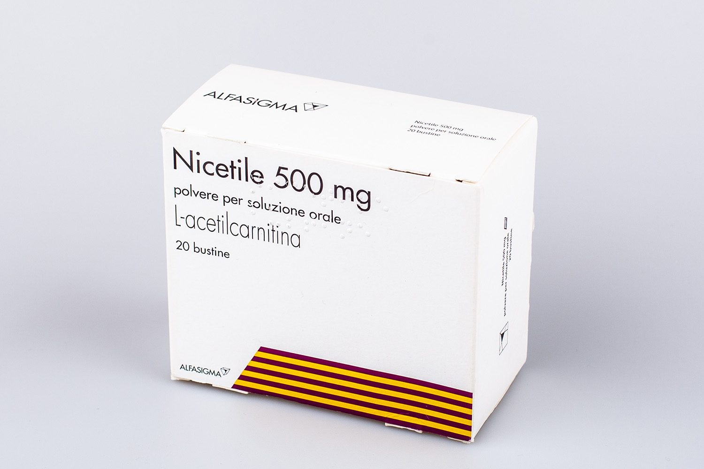

Ніцетіл / Nicetile / Ницетил саше
Производитель: Италия

Контактная информация:
Цена: 1050 грн/уп.
В наличии
Производитель: Италия
Цена: 1050 грн/уп.
В наличии
Именно в FarmItal вы можете купить Ницетил, Nicetile, Ницетил саше в Украине. Гарантированно качественные!
Доставка Nicetile таблетки осуществляется транспортными компаниями, сроки выполнения заказа оговариваются менеджером Фармитал. Вы можете заказать Ницетил, Nicetile, Ницетил саше в городах: Одесса, Херсон, Чернигов, Северодонецк, Бердянск, Бровары, Днепр, Винница, Киев, Славянск, Полтава, Краматорск, Белая Церковь, Каменское, Мариуполь, Черновцы, Александрия , Каменец-Подольский, Львов, Запорожье, Кропивницкий, Житомир, Ивано-Франковск, Сумы, Черкассы, Константиновка, Мелитополь, Кривой Рог, Ровно, Луцк, Никополь, Павлоград, Ужгород, Кременчуг, Лисичанск, Хмельницкий, Тернополь, Харьков, Николаев, а также других населенных пунктах Украины.
Ницетил назначается для стимуляции энергетических обменов. Ацетил карнитин, содержащийся в составе Ницетила, является изомером элемента натурального происхождения, который, в условиях физиологии, присутствует в органах, тканях человека и в ЦНС. Ницетил принимает участие в процессах, связанных с метаболизмом углеводов, жирных кислот. Исключительно при патологии Ницетил может оказывать нейропротекторное влияние на нейроны и органеллы-митохондрии. Как трофические факторы оказывает положительное влияние, способствуя восстановлению структуры клеток.
Повышает энергетическую выработку, необходимую для регенерационных процессов, совершенствует фосфолипидный синтез для мембранного построения. Ницетил, как и другие ноотропные средства, не вызывает привыкания и имеет минимальное количество побочных эффектов, восстанавливает структуру нервных клеток (то есть препарат оказывает нейропротекторное действие). Также он способствует восстановлению баланса между тормозными и возбуждающими реакциями мозга. Таким образом, препарат оказывает не только симптоматическое лечение, но и действует на источник заболевания.
Ницетил применяется по назначению врача. Ницетил представлен обычно в гранулах, предназначенных непосредственно для приготовления лекарственного раствора внутреннего использования. Ницетил назначают для приема внутрь в суточной дозе до 1,5 г, разбивают указанную дозу в 2-3 приема. Вещество Ацетилкарнитин полностью синтезируется в почках, печени с участием ферментов, метионина, витаминов групп В9, В12, В3, В6, С, лизина и железа. После полного синтеза распространяется из органов дальше организмом в целом.
Внутрь, таблетки, порошок, гранулы для приема внутрь – 0,5-1,5 г в день в 2-3 приема по назначению врача.
Хранить Ницетил Саше рекомендуется в сухом месте до +25°C без прямых лучей солнца.